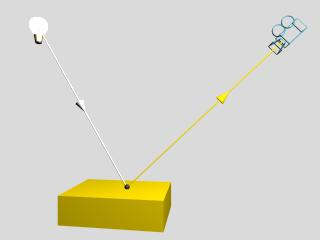

La seva ubicació, forma (puntual, lineal,...) i color determinen l'espectre de part de la llum incident en el punt Q. Òbviament, la llum transmesa és funció de les característiques (diagrama espectral) de la llum incident. En una escena sense il·luminació tots els objectes es veurien del mateix color (negre).
|  |